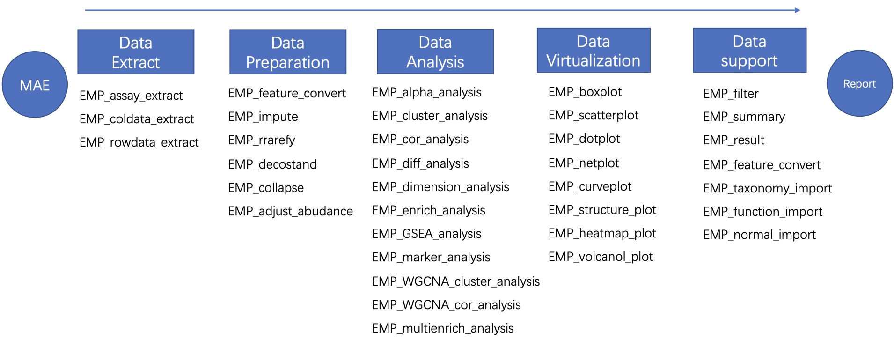
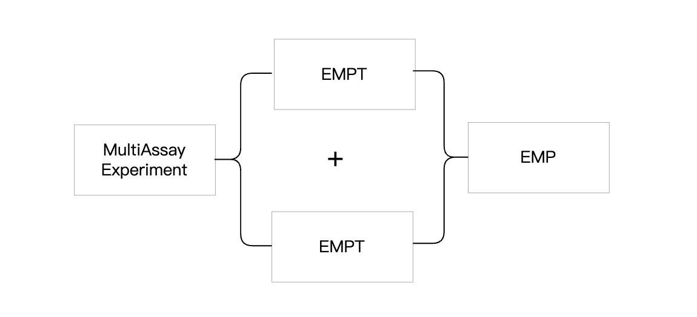

1 EasyMultiProfiler
EasyMultiProfiler包采用了面向对象的编程方法，集合了多个数据分析模块。数据可以在不同模块之间流畅地传递，使得分析流程简易、易理解。

1.1 EasyMultiProfiler的安装
1.1.1 首次安装
Mac os 用户：
if (!requireNamespace("pak", quietly=TRUE)) install.packages("pak")
pak::pak("liubingdong/EasyMultiProfiler")
library(EasyMultiProfiler)
Windows用户：
- 需要根据自己的R版本安装对应的RTool。例如R 4.3.x 需要安装 RTool4.3，R 4.4.x 需要安装 RTool4.4。
RTool（约400MB）下载安装地址：
官方原始地址 中国镜像地址 (在页面中依此点击[Download R for Windows] ->[Rtools])
- 安装对应版本的RTool，请重启R后，使用pak包进行安装
if (!requireNamespace("pak", quietly=TRUE)) install.packages("pak") pak::pak("liubingdong/EasyMultiProfiler") library(EasyMultiProfiler)
1.1.2 更新版本
EasyMultiProfiler包在持续更新更多的分析和可视化模块，当需要更新版本时，可以再次运行pak即可进行更新。
pak::pak("liubingdong/EasyMultiProfiler")
library(EasyMultiProfiler)
1.2 EasyMultiProfiler基本概念
1.2.1 EasyMultiProfiler的数据对象容器
- MAE对象：即MultiAssayExperiment。MAE对象是用户需要初始创建的对象，通常是由多个组学项目的实验数据和与之对应的行数据、列数据组成（也支持创建单一组学项目的MAE对象）。
- EMPT对象：即EMP-transporter。从MAE对象中提取出单一组学项目，即形成EMPT对象。在EMPT对象中，实验数据、行数据和列数据之间的关系不会因为“提取”操作而改变。
- EMP对象：当多个EMPT对象进行联合分析时，可以将这些EMPT对象合并成一个EMP对象。在EMP对象中，每个EMPT对象内实验数据、行数据和列数据之间的关系不会因为“合并”操作而改变。
注意：为了尽可能保证原始数据不会被篡改，数据分析过程中从MAE→EMPT的过程是单向的，即不能将EMPT对象重新放回MAE对象，但是当进行联合分析时，EMPT对象可以组合成EMP对象继续进行组学联合流程。

1.2.2 EasyMultiProfiler的数据展现格式
EasyMultiProfiler包采用tibble格式（一种数据框类型）来呈现数据，在tibble的列名下，用户可以查看对应列的数据类型。常见的数据类型包括：int-整数型、dbl-浮点型、chr-字符串型、lgl-逻辑型(True和False)、fct-因子型、date-日期型、dttm-日期时间型。
1.2.3 EasyMultiProfiler的数据传递
EasyMultiProfiler包使用|>操作符以帮助数据传递，即将前一个函数的输出作为后一个函数的输入，从而实现连续的数据处理操作（与Magrittr包的%>%操作符功能相同）。
1.2.4 EasyMultiProfiler的行动参数
EasyMultiProfiler包进行数据分析操作时，组学数据将会存储在EMPT对象容器内进行功能模块之间的传递。当用户需要在某个模块完成后，可以使用action参数进行提取该模块产生的原始分析结果。此参数默认值为action='add'意味着当前功能模块的分析结果将会添加到EMPT对象内进行传递，当action='get'意味着当前功能模块的分析结果将直接输出。
特殊情况：在EMP_filter函数中的action用于指定此模块操作时剔除(kick)或者保留(select)。